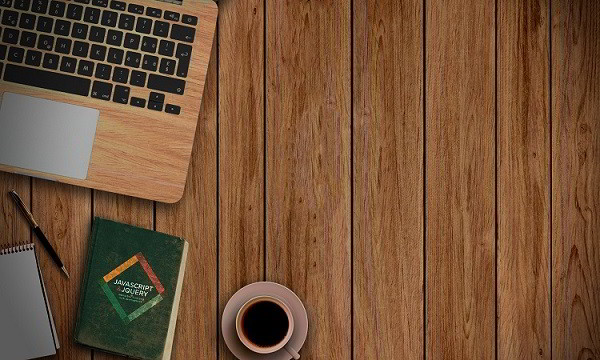

Dans la vie réelle, les entreprises ont un local où elles accueillent leurs clients. Elles mettent en place des aménagements soigneusement réfléchis et installent une devanture attirante pour que les passants soient attirés. Sur le web, ces installations physiques se matérialisent par un site vitrine. Avec les technologies avancées que nous avons de nos jours, il est de plus en plus urgent de passer par Internet pour montrer sa vitrine à un grand nombre de personnes.
Communément appelé “site web vitrine” ce dernier se traduit par la mise en place d’un site de présentation d’une entreprise. Au travers de quelques pages statiques de contenu, cette vitrine en ligne tient à présenter l’activité d’une entreprise, ses prestations ou encore quelques photos de ses réalisations. Ce modèle de site Internet ne propose pas de système de vente en ligne.
Toutesles entreprises souhaitant promouvoir leur activité sont les bienvenues sur la toile. Artisans, commerçants, coiffeurs, grands comptes, indépendants ou entreprise multinationale, ils sont tous concernés par la création d’un site internet vitrine. Grâce à une conception intelligente et à une prise en compte des besoins de chacun, les professionnels du web pourront proposer un développement sur mesure.
Une alternative simple qui s’offre comme un tremplin pour l’activité d’une société. Avec Internet, cette dernière pourra ainsi toucher plus de monde.
Complet, ce site de présentation offre des informations capitales pour l’internaute. Les professionnels se tournant vers cette solution vont chercher l’interaction avec ce public. De ce fait, ils mettront en place un formulaire de contact, de réservation ou de devis en ligne en place. Ce développement aura pour conséquence de se créer une base de données solide de prospects et clients. Les gérants d’entreprise augmenteront leur champ d’horizon et atteindront plus de clients.
Les internautes pourront également découvrir les prestations et réalisations, pour se faire une idée de ce dont ils pourront bénéficier en faisant appel à vos services.
Pour présenter une vitrine en ligne en adéquation avec votre charte graphique, il est important de confier son projet à des professionnels. Connaissant le marché sur le web, ils sont à même de vous créer un site web correspondant à vos besoins et répondant aux dernières normes de développement et d’intégration.
Grâce à eux et à vos idées, vous présenterez en ligne votre entreprise et saurez conquérir de nombreux visiteurs. Accompagnée d’une stratégie SEO, SEM ou SMO , votre activité grandira et s’épanouira au fil des années.